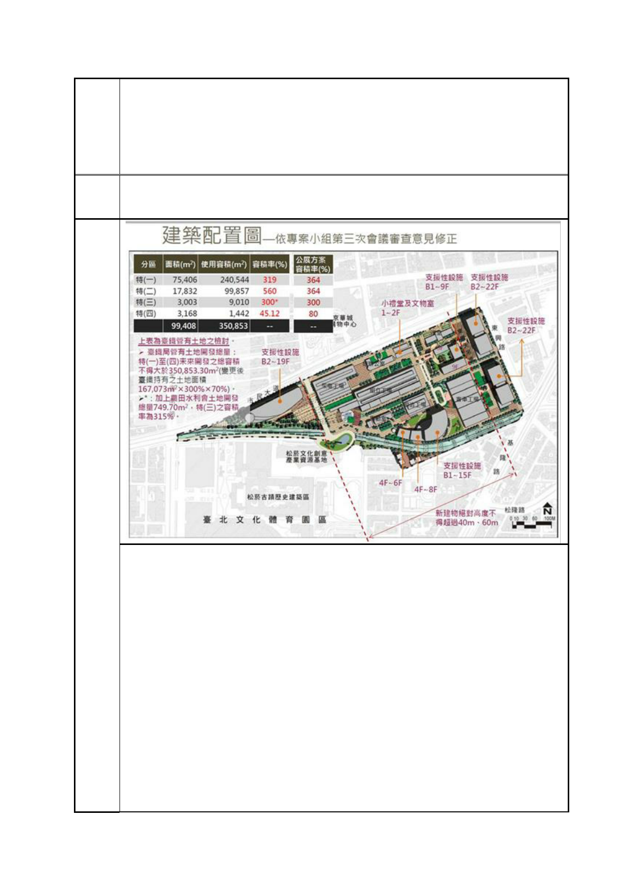

臺北市都市計畫委員會 公民或團體陳情意見綜理表
「變更臺北市信義區逸仙段二小段 33 地號等 21 筆土地（原臺北機廠）
案
名
工業區為創意文化專用區、特定專用區、道路及綠地用地主要計畫案」
及「擬定臺北市信義區逸仙段二小段 33 地號等 21 筆土地（原臺北機
廠）創意文化專用區、特定專用區、道路及綠地用地細部計畫暨劃定
都市更新地區計畫案」
「樓沒有太高就好」、「總體開發面積比原來少就好」、「非蓋不可的高
樓盡量往旁邊塞就好」的設計圖來決定台北機廠的未來！
扼殺古蹟！重點在動態修繕功能和廠區紋理保存！
除了移平部份廠房另起用途不明的高樓啟人疑竇，另一個突顯官方版
本是半吊子保存的「大污點」，也就在於這些被移除的廠房上！
首先，若整個特區已定位成「台北機廠博物館特定專用區」，那麼就
更該考量「動態展示」是工業遺址不同一般古蹟建築僅能作靜態展覽
的珍貴之處，應該以此無可取代的特色作為保存重點。
聯盟自今年 3 月起辦理的導覽活動，前後吸引了 5、6 百多位的里民、
市民到此走訪，大家身歷其境，從諾大廠房中殘存的機具、零件和標
語，你一言我一語地探索構造複雜的機車如何透過勞動者的巧手拆
卸，與人類「坦程相見」；另外，廠區中透過吊車、移車台、鐵軌，
在有限的場區內將車廂進行巧妙的縱向、橫向挪移，順利送入各工場
進行不同功能的整修，也是許多參訪者在實際走訪後提出應作重點保
留的項目；而廠內利用剩餘蒸氣來加澡堂熱水、蒸便當的管線設計，
讓人嘖嘖稱奇之餘，也提出「改作市民澡堂，讓家裡沒浴缸的市民不
第 89 頁/共 154 頁